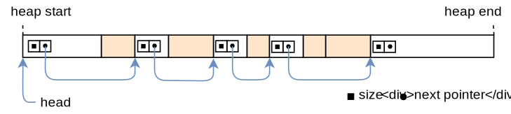

Allocator Designs
This post explains how to implement heap allocators from scratch. It presents and discusses different allocator designs, including bump allocation, linked list allocation, and fixed-size block allocation. For each of the three designs, we will create a basic implementation that can be used for our kernel.
This blog is openly developed on GitHub. If you have any problems or questions, please open an issue there. You can also leave comments at the bottom. The complete source code for this post can be found in the post-11 branch.
Table of Contents
üîóIntroduction
In the previous post, we added basic support for heap allocations to our kernel. For that, we created a new memory region in the page tables and used the linked_list_allocator crate to manage that memory. While we have a working heap now, we left most of the work to the allocator crate without trying to understand how it works.
In this post, we will show how to create our own heap allocator from scratch instead of relying on an existing allocator crate. We will discuss different allocator designs, including a simplistic bump allocator and a basic fixed-size block allocator, and use this knowledge to implement an allocator with improved performance (compared to the linked_list_allocator crate).
üîóDesign Goals
The responsibility of an allocator is to manage the available heap memory. It needs to return unused memory on alloc calls and keep track of memory freed by dealloc so that it can be reused again. Most importantly, it must never hand out memory that is already in use somewhere else because this would cause undefined behavior.
Apart from correctness, there are many secondary design goals. For example, the allocator should effectively utilize the available memory and keep fragmentation low. Furthermore, it should work well for concurrent applications and scale to any number of processors. For maximal performance, it could even optimize the memory layout with respect to the CPU caches to improve cache locality and avoid false sharing.
These requirements can make good allocators very complex. For example, jemalloc has over 30.000 lines of code. This complexity is often undesired in kernel code, where a single bug can lead to severe security vulnerabilities. Fortunately, the allocation patterns of kernel code are often much simpler compared to userspace code, so that relatively simple allocator designs often suffice.
In the following, we present three possible kernel allocator designs and explain their advantages and drawbacks.
üîóBump Allocator
The most simple allocator design is a bump allocator (also known as stack allocator). It allocates memory linearly and only keeps track of the number of allocated bytes and the number of allocations. It is only useful in very specific use cases because it has a severe limitation: it can only free all memory at once.
üîóIdea
The idea behind a bump allocator is to linearly allocate memory by increasing (“bumping”) a next variable, which points to the start of the unused memory. At the beginning, next is equal to the start address of the heap. On each allocation, next is increased by the allocation size so that it always points to the boundary between used and unused memory:

The next pointer only moves in a single direction and thus never hands out the same memory region twice. When it reaches the end of the heap, no more memory can be allocated, resulting in an out-of-memory error on the next allocation.
A bump allocator is often implemented with an allocation counter, which is increased by 1 on each alloc call and decreased by 1 on each dealloc call. When the allocation counter reaches zero, it means that all allocations on the heap have been deallocated. In this case, the next pointer can be reset to the start address of the heap, so that the complete heap memory is available for allocations again.
üîóImplementation
We start our implementation by declaring a new allocator::bump submodule:
// in src/allocator.rs
pub mod bump;
The content of the submodule lives in a new src/allocator/bump.rs file, which we create with the following content:
// in src/allocator/bump.rs
pub struct BumpAllocator {
heap_start: usize,
heap_end: usize,
next: usize,
allocations: usize,
}
impl BumpAllocator {
/// Creates a new empty bump allocator.
pub const fn new() -> Self {
BumpAllocator {
heap_start: 0,
heap_end: 0,
next: 0,
allocations: 0,
}
}
/// Initializes the bump allocator with the given heap bounds.
///
/// This method is unsafe because the caller must ensure that the given
/// memory range is unused. Also, this method must be called only once.
pub unsafe fn init(&mut self, heap_start: usize, heap_size: usize) {
self.heap_start = heap_start;
self.heap_end = heap_start + heap_size;
self.next = heap_start;
}
}
The heap_start and heap_end fields keep track of the lower and upper bounds of the heap memory region. The caller needs to ensure that these addresses are valid, otherwise the allocator would return invalid memory. For this reason, the init function needs to be unsafe to call.
The purpose of the next field is to always point to the first unused byte of the heap, i.e., the start address of the next allocation. It is set to heap_start in the init function because at the beginning, the entire heap is unused. On each allocation, this field will be increased by the allocation size (“bumped”) to ensure that we don’t return the same memory region twice.
The allocations field is a simple counter for the active allocations with the goal of resetting the allocator after the last allocation has been freed. It is initialized with 0.
We chose to create a separate init function instead of performing the initialization directly in new in order to keep the interface identical to the allocator provided by the linked_list_allocator crate. This way, the allocators can be switched without additional code changes.
üîóImplementing GlobalAlloc
As explained in the previous post, all heap allocators need to implement the GlobalAlloc trait, which is defined like this:
pub unsafe trait GlobalAlloc {
unsafe fn alloc(&self, layout: Layout) -> *mut u8;
unsafe fn dealloc(&self, ptr: *mut u8, layout: Layout);
unsafe fn alloc_zeroed(&self, layout: Layout) -> *mut u8 { ... }
unsafe fn realloc(
&self,
ptr: *mut u8,
layout: Layout,
new_size: usize
) -> *mut u8 { ... }
}
Only the alloc and dealloc methods are required; the other two methods have default implementations and can be omitted.
üîóFirst Implementation Attempt
Let’s try to implement the alloc method for our BumpAllocator:
// in src/allocator/bump.rs
use alloc::alloc::{GlobalAlloc, Layout};
unsafe impl GlobalAlloc for BumpAllocator {
unsafe fn alloc(&self, layout: Layout) -> *mut u8 {
// TODO alignment and bounds check
let alloc_start = self.next;
self.next = alloc_start + layout.size();
self.allocations += 1;
alloc_start as *mut u8
}
unsafe fn dealloc(&self, _ptr: *mut u8, _layout: Layout) {
todo!();
}
}
First, we use the next field as the start address for our allocation. Then we update the next field to point to the end address of the allocation, which is the next unused address on the heap. Before returning the start address of the allocation as a *mut u8 pointer, we increase the allocations counter by 1.
Note that we don’t perform any bounds checks or alignment adjustments, so this implementation is not safe yet. This does not matter much because it fails to compile anyway with the following error:
error[E0594]: cannot assign to `self.next` which is behind a `&` reference
--> src/allocator/bump.rs:29:9
|
29 | self.next = alloc_start + layout.size();
| ^^^^^^^^^^^^^^^^^^^^^^^^^^^^^^^^^^^^^^^ `self` is a `&` reference, so the data it refers to cannot be written
(The same error also occurs for the self.allocations += 1 line. We omitted it here for brevity.)
The error occurs because the alloc and dealloc methods of the GlobalAlloc trait only operate on an immutable &self reference, so updating the next and allocations fields is not possible. This is problematic because updating next on every allocation is the essential principle of a bump allocator.
üîóGlobalAlloc and Mutability
Before we look at a possible solution to this mutability problem, let’s try to understand why the GlobalAlloc trait methods are defined with &self arguments: As we saw in the previous post, the global heap allocator is defined by adding the #[global_allocator] attribute to a static that implements the GlobalAlloc trait. Static variables are immutable in Rust, so there is no way to call a method that takes &mut self on the static allocator. For this reason, all the methods of GlobalAlloc only take an immutable &self reference.
Fortunately, there is a way to get a &mut self reference from a &self reference: We can use synchronized interior mutability by wrapping the allocator in a spin::Mutex spinlock. This type provides a lock method that performs mutual exclusion and thus safely turns a &self reference to a &mut self reference. We’ve already used the wrapper type multiple times in our kernel, for example for the VGA text buffer.
üîóA Locked Wrapper Type
With the help of the spin::Mutex wrapper type, we can implement the GlobalAlloc trait for our bump allocator. The trick is to implement the trait not for the BumpAllocator directly, but for the wrapped spin::Mutex<BumpAllocator> type:
unsafe impl GlobalAlloc for spin::Mutex<BumpAllocator> {…}
Unfortunately, this still doesn’t work because the Rust compiler does not permit trait implementations for types defined in other crates:
error[E0117]: only traits defined in the current crate can be implemented for arbitrary types
--> src/allocator/bump.rs:28:1
|
28 | unsafe impl GlobalAlloc for spin::Mutex<BumpAllocator> {
| ^^^^^^^^^^^^^^^^^^^^^^^^^^^^--------------------------
| | |
| | `spin::mutex::Mutex` is not defined in the current crate
| impl doesn't use only types from inside the current crate
|
= note: define and implement a trait or new type instead
To fix this, we need to create our own wrapper type around spin::Mutex:
// in src/allocator.rs
/// A wrapper around spin::Mutex to permit trait implementations.
pub struct Locked<A> {
inner: spin::Mutex<A>,
}
impl<A> Locked<A> {
pub const fn new(inner: A) -> Self {
Locked {
inner: spin::Mutex::new(inner),
}
}
pub fn lock(&self) -> spin::MutexGuard<A> {
self.inner.lock()
}
}
The type is a generic wrapper around a spin::Mutex<A>. It imposes no restrictions on the wrapped type A, so it can be used to wrap all kinds of types, not just allocators. It provides a simple new constructor function that wraps a given value. For convenience, it also provides a lock function that calls lock on the wrapped Mutex. Since the Locked type is general enough to be useful for other allocator implementations too, we put it in the parent allocator module.
üîóImplementation for Locked<BumpAllocator>
The Locked type is defined in our own crate (in contrast to spin::Mutex), so we can use it to implement GlobalAlloc for our bump allocator. The full implementation looks like this:
// in src/allocator/bump.rs
use super::{align_up, Locked};
use alloc::alloc::{GlobalAlloc, Layout};
use core::ptr;
unsafe impl GlobalAlloc for Locked<BumpAllocator> {
unsafe fn alloc(&self, layout: Layout) -> *mut u8 {
let mut bump = self.lock(); // get a mutable reference
let alloc_start = align_up(bump.next, layout.align());
let alloc_end = match alloc_start.checked_add(layout.size()) {
Some(end) => end,
None => return ptr::null_mut(),
};
if alloc_end > bump.heap_end {
ptr::null_mut() // out of memory
} else {
bump.next = alloc_end;
bump.allocations += 1;
alloc_start as *mut u8
}
}
unsafe fn dealloc(&self, _ptr: *mut u8, _layout: Layout) {
let mut bump = self.lock(); // get a mutable reference
bump.allocations -= 1;
if bump.allocations == 0 {
bump.next = bump.heap_start;
}
}
}
The first step for both alloc and dealloc is to call the Mutex::lock method through the inner field to get a mutable reference to the wrapped allocator type. The instance remains locked until the end of the method, so that no data race can occur in multithreaded contexts (we will add threading support soon).
Compared to the previous prototype, the alloc implementation now respects alignment requirements and performs a bounds check to ensure that the allocations stay inside the heap memory region. The first step is to round up the next address to the alignment specified by the Layout argument. The code for the align_up function is shown in a moment. We then add the requested allocation size to alloc_start to get the end address of the allocation. To prevent integer overflow on large allocations, we use the checked_add method. If an overflow occurs or if the resulting end address of the allocation is larger than the end address of the heap, we return a null pointer to signal an out-of-memory situation. Otherwise, we update the next address and increase the allocations counter by 1 like before. Finally, we return the alloc_start address converted to a *mut u8 pointer.
The dealloc function ignores the given pointer and Layout arguments. Instead, it just decreases the allocations counter. If the counter reaches 0 again, it means that all allocations were freed again. In this case, it resets the next address to the heap_start address to make the complete heap memory available again.
üîóAddress Alignment
The align_up function is general enough that we can put it into the parent allocator module. A basic implementation looks like this:
// in src/allocator.rs
/// Align the given address `addr` upwards to alignment `align`.
fn align_up(addr: usize, align: usize) -> usize {
let remainder = addr % align;
if remainder == 0 {
addr // addr already aligned
} else {
addr - remainder + align
}
}
The function first computes the remainder of the division of addr by align. If the remainder is 0, the address is already aligned with the given alignment. Otherwise, we align the address by subtracting the remainder (so that the new remainder is 0) and then adding the alignment (so that the address does not become smaller than the original address).
Note that this isn’t the most efficient way to implement this function. A much faster implementation looks like this:
/// Align the given address `addr` upwards to alignment `align`.
///
/// Requires that `align` is a power of two.
fn align_up(addr: usize, align: usize) -> usize {
(addr + align - 1) & !(align - 1)
}
This method requires align to be a power of two, which can be guaranteed by utilizing the GlobalAlloc trait (and its Layout parameter). This makes it possible to create a bitmask to align the address in a very efficient way. To understand how it works, let’s go through it step by step, starting on the right side:
- Since
alignis a power of two, its binary representation has only a single bit set (e.g.0b000100000). This means thatalign - 1has all the lower bits set (e.g.0b00011111). - By creating the bitwise
NOTthrough the!operator, we get a number that has all the bits set except for the bits lower thanalign(e.g.0b…111111111100000). - By performing a bitwise
ANDon an address and!(align - 1), we align the address downwards. This works by clearing all the bits that are lower thanalign. - Since we want to align upwards instead of downwards, we increase the
addrbyalign - 1before performing the bitwiseAND. This way, already aligned addresses remain the same while non-aligned addresses are rounded to the next alignment boundary.
Which variant you choose is up to you. Both compute the same result, only using different methods.
üîóUsing It
To use the bump allocator instead of the linked_list_allocator crate, we need to update the ALLOCATOR static in allocator.rs:
// in src/allocator.rs
use bump::BumpAllocator;
#[global_allocator]
static ALLOCATOR: Locked<BumpAllocator> = Locked::new(BumpAllocator::new());
Here it becomes important that we declared BumpAllocator::new and Locked::new as const functions. If they were normal functions, a compilation error would occur because the initialization expression of a static must be evaluable at compile time.
We don’t need to change the ALLOCATOR.lock().init(HEAP_START, HEAP_SIZE) call in our init_heap function because the bump allocator provides the same interface as the allocator provided by the linked_list_allocator.
Now our kernel uses our bump allocator! Everything should still work, including the heap_allocation tests that we created in the previous post:
> cargo test --test heap_allocation
[…]
Running 3 tests
simple_allocation... [ok]
large_vec... [ok]
many_boxes... [ok]
üîóDiscussion
The big advantage of bump allocation is that it’s very fast. Compared to other allocator designs (see below) that need to actively look for a fitting memory block and perform various bookkeeping tasks on alloc and dealloc, a bump allocator can be optimized to just a few assembly instructions. This makes bump allocators useful for optimizing the allocation performance, for example when creating a virtual DOM library.
While a bump allocator is seldom used as the global allocator, the principle of bump allocation is often applied in the form of arena allocation, which basically batches individual allocations together to improve performance. An example of an arena allocator for Rust is contained in the toolshed crate.
üîóThe Drawback of a Bump Allocator
The main limitation of a bump allocator is that it can only reuse deallocated memory after all allocations have been freed. This means that a single long-lived allocation suffices to prevent memory reuse. We can see this when we add a variation of the many_boxes test:
// in tests/heap_allocation.rs
#[test_case]
fn many_boxes_long_lived() {
let long_lived = Box::new(1); // new
for i in 0..HEAP_SIZE {
let x = Box::new(i);
assert_eq!(*x, i);
}
assert_eq!(*long_lived, 1); // new
}
Like the many_boxes test, this test creates a large number of allocations to provoke an out-of-memory failure if the allocator does not reuse freed memory. Additionally, the test creates a long_lived allocation, which lives for the whole loop execution.
When we try to run our new test, we see that it indeed fails:
> cargo test --test heap_allocation
Running 4 tests
simple_allocation... [ok]
large_vec... [ok]
many_boxes... [ok]
many_boxes_long_lived... [failed]
Error: panicked at 'allocation error: Layout { size_: 8, align_: 8 }', src/lib.rs:86:5
Let’s try to understand why this failure occurs in detail: First, the long_lived allocation is created at the start of the heap, thereby increasing the allocations counter by 1. For each iteration of the loop, a short-lived allocation is created and directly freed again before the next iteration starts. This means that the allocations counter is temporarily increased to 2 at the beginning of an iteration and decreased to 1 at the end of it. The problem now is that the bump allocator can only reuse memory after all allocations have been freed, i.e., when the allocations counter falls to 0. Since this doesn’t happen before the end of the loop, each loop iteration allocates a new region of memory, leading to an out-of-memory error after a number of iterations.
üîóFixing the Test?
There are two potential tricks that we could utilize to fix the test for our bump allocator:
- We could update
deallocto check whether the freed allocation was the last allocation returned byallocby comparing its end address with thenextpointer. In case they’re equal, we can safely resetnextback to the start address of the freed allocation. This way, each loop iteration reuses the same memory block. - We could add an
alloc_backmethod that allocates memory from the end of the heap using an additionalnext_backfield. Then we could manually use this allocation method for all long-lived allocations, thereby separating short-lived and long-lived allocations on the heap. Note that this separation only works if it’s clear beforehand how long each allocation will live. Another drawback of this approach is that manually performing allocations is cumbersome and potentially unsafe.
While both of these approaches work to fix the test, they are not a general solution since they are only able to reuse memory in very specific cases. The question is: Is there a general solution that reuses all freed memory?
üîóReusing All Freed Memory?
As we learned in the previous post, allocations can live arbitrarily long and can be freed in an arbitrary order. This means that we need to keep track of a potentially unbounded number of non-continuous, unused memory regions, as illustrated by the following example:
The graphic shows the heap over the course of time. At the beginning, the complete heap is unused, and the next address is equal to heap_start (line 1). Then the first allocation occurs (line 2). In line 3, a second memory block is allocated and the first allocation is freed. Many more allocations are added in line 4. Half of them are very short-lived and already get freed in line 5, where another new allocation is also added.
Line 5 shows the fundamental problem: We have five unused memory regions with different sizes, but the next pointer can only point to the beginning of the last region. While we could store the start addresses and sizes of the other unused memory regions in an array of size 4 for this example, this isn’t a general solution since we could easily create an example with 8, 16, or 1000 unused memory regions.
Normally, when we have a potentially unbounded number of items, we can just use a heap-allocated collection. This isn’t really possible in our case, since the heap allocator can’t depend on itself (it would cause endless recursion or deadlocks). So we need to find a different solution.
üîóLinked List Allocator
A common trick to keep track of an arbitrary number of free memory areas when implementing allocators is to use these areas themselves as backing storage. This utilizes the fact that the regions are still mapped to a virtual address and backed by a physical frame, but the stored information is not needed anymore. By storing the information about the freed region in the region itself, we can keep track of an unbounded number of freed regions without needing additional memory.
The most common implementation approach is to construct a single linked list in the freed memory, with each node being a freed memory region:

Each list node contains two fields: the size of the memory region and a pointer to the next unused memory region. With this approach, we only need a pointer to the first unused region (called head) to keep track of all unused regions, regardless of their number. The resulting data structure is often called a free list.
As you might guess from the name, this is the technique that the linked_list_allocator crate uses. Allocators that use this technique are also often called pool allocators.
üîóImplementation
In the following, we will create our own simple LinkedListAllocator type that uses the above approach for keeping track of freed memory regions. This part of the post isn’t required for future posts, so you can skip the implementation details if you like.
üîóThe Allocator Type
We start by creating a private ListNode struct in a new allocator::linked_list submodule:
// in src/allocator.rs
pub mod linked_list;
// in src/allocator/linked_list.rs
struct ListNode {
size: usize,
next: Option<&'static mut ListNode>,
}
Like in the graphic, a list node has a size field and an optional pointer to the next node, represented by the Option<&'static mut ListNode> type. The &'static mut type semantically describes an owned object behind a pointer. Basically, it’s a Box without a destructor that frees the object at the end of the scope.
We implement the following set of methods for ListNode:
// in src/allocator/linked_list.rs
impl ListNode {
const fn new(size: usize) -> Self {
ListNode { size, next: None }
}
fn start_addr(&self) -> usize {
self as *const Self as usize
}
fn end_addr(&self) -> usize {
self.start_addr() + self.size
}
}
The type has a simple constructor function named new and methods to calculate the start and end addresses of the represented region. We make the new function a const function, which will be required later when constructing a static linked list allocator. Note that any use of mutable references in const functions (including setting the next field to None) is still unstable. In order to get it to compile, we need to add #![feature(const_mut_refs)] to the beginning of our lib.rs.
With the ListNode struct as a building block, we can now create the LinkedListAllocator struct:
// in src/allocator/linked_list.rs
pub struct LinkedListAllocator {
head: ListNode,
}
impl LinkedListAllocator {
/// Creates an empty LinkedListAllocator.
pub const fn new() -> Self {
Self {
head: ListNode::new(0),
}
}
/// Initialize the allocator with the given heap bounds.
///
/// This function is unsafe because the caller must guarantee that the given
/// heap bounds are valid and that the heap is unused. This method must be
/// called only once.
pub unsafe fn init(&mut self, heap_start: usize, heap_size: usize) {
self.add_free_region(heap_start, heap_size);
}
/// Adds the given memory region to the front of the list.
unsafe fn add_free_region(&mut self, addr: usize, size: usize) {
todo!();
}
}
The struct contains a head node that points to the first heap region. We are only interested in the value of the next pointer, so we set the size to 0 in the ListNode::new function. Making head a ListNode instead of just a &'static mut ListNode has the advantage that the implementation of the alloc method will be simpler.
Like for the bump allocator, the new function doesn’t initialize the allocator with the heap bounds. In addition to maintaining API compatibility, the reason is that the initialization routine requires writing a node to the heap memory, which can only happen at runtime. The new function, however, needs to be a const function that can be evaluated at compile time because it will be used for initializing the ALLOCATOR static. For this reason, we again provide a separate, non-constant init method.
The init method uses an add_free_region method, whose implementation will be shown in a moment. For now, we use the todo! macro to provide a placeholder implementation that always panics.
üîóThe add_free_region Method
The add_free_region method provides the fundamental push operation on the linked list. We currently only call this method from init, but it will also be the central method in our dealloc implementation. Remember, the dealloc method is called when an allocated memory region is freed again. To keep track of this freed memory region, we want to push it to the linked list.
The implementation of the add_free_region method looks like this:
// in src/allocator/linked_list.rs
use super::align_up;
use core::mem;
impl LinkedListAllocator {
/// Adds the given memory region to the front of the list.
unsafe fn add_free_region(&mut self, addr: usize, size: usize) {
// ensure that the freed region is capable of holding ListNode
assert_eq!(align_up(addr, mem::align_of::<ListNode>()), addr);
assert!(size >= mem::size_of::<ListNode>());
// create a new list node and append it at the start of the list
let mut node = ListNode::new(size);
node.next = self.head.next.take();
let node_ptr = addr as *mut ListNode;
node_ptr.write(node);
self.head.next = Some(&mut *node_ptr)
}
}
The method takes the address and size of a memory region as an argument and adds it to the front of the list. First, it ensures that the given region has the necessary size and alignment for storing a ListNode. Then it creates the node and inserts it into the list through the following steps:

Step 0 shows the state of the heap before add_free_region is called. In step 1, the method is called with the memory region marked as freed in the graphic. After the initial checks, the method creates a new node on its stack with the size of the freed region. It then uses the Option::take method to set the next pointer of the node to the current head pointer, thereby resetting the head pointer to None.
In step 2, the method writes the newly created node to the beginning of the freed memory region through the write method. It then points the head pointer to the new node. The resulting pointer structure looks a bit chaotic because the freed region is always inserted at the beginning of the list, but if we follow the pointers, we see that each free region is still reachable from the head pointer.
üîóThe find_region Method
The second fundamental operation on a linked list is finding an entry and removing it from the list. This is the central operation needed for implementing the alloc method. We implement the operation as a find_region method in the following way:
// in src/allocator/linked_list.rs
impl LinkedListAllocator {
/// Looks for a free region with the given size and alignment and removes
/// it from the list.
///
/// Returns a tuple of the list node and the start address of the allocation.
fn find_region(&mut self, size: usize, align: usize)
-> Option<(&'static mut ListNode, usize)>
{
// reference to current list node, updated for each iteration
let mut current = &mut self.head;
// look for a large enough memory region in linked list
while let Some(ref mut region) = current.next {
if let Ok(alloc_start) = Self::alloc_from_region(®ion, size, align) {
// region suitable for allocation -> remove node from list
let next = region.next.take();
let ret = Some((current.next.take().unwrap(), alloc_start));
current.next = next;
return ret;
} else {
// region not suitable -> continue with next region
current = current.next.as_mut().unwrap();
}
}
// no suitable region found
None
}
}
The method uses a current variable and a while let loop to iterate over the list elements. At the beginning, current is set to the (dummy) head node. On each iteration, it is then updated to the next field of the current node (in the else block). If the region is suitable for an allocation with the given size and alignment, the region is removed from the list and returned together with the alloc_start address.
When the current.next pointer becomes None, the loop exits. This means we iterated over the whole list but found no region suitable for an allocation. In that case, we return None. Whether a region is suitable is checked by the alloc_from_region function, whose implementation will be shown in a moment.
Let’s take a more detailed look at how a suitable region is removed from the list:

Step 0 shows the situation before any pointer adjustments. The region and current regions and the region.next and current.next pointers are marked in the graphic. In step 1, both the region.next and current.next pointers are reset to None by using the Option::take method. The original pointers are stored in local variables called next and ret.
In step 2, the current.next pointer is set to the local next pointer, which is the original region.next pointer. The effect is that current now directly points to the region after region, so that region is no longer an element of the linked list. The function then returns the pointer to region stored in the local ret variable.
üîóThe alloc_from_region Function
The alloc_from_region function returns whether a region is suitable for an allocation with a given size and alignment. It is defined like this:
// in src/allocator/linked_list.rs
impl LinkedListAllocator {
/// Try to use the given region for an allocation with given size and
/// alignment.
///
/// Returns the allocation start address on success.
fn alloc_from_region(region: &ListNode, size: usize, align: usize)
-> Result<usize, ()>
{
let alloc_start = align_up(region.start_addr(), align);
let alloc_end = alloc_start.checked_add(size).ok_or(())?;
if alloc_end > region.end_addr() {
// region too small
return Err(());
}
let excess_size = region.end_addr() - alloc_end;
if excess_size > 0 && excess_size < mem::size_of::<ListNode>() {
// rest of region too small to hold a ListNode (required because the
// allocation splits the region in a used and a free part)
return Err(());
}
// region suitable for allocation
Ok(alloc_start)
}
}
First, the function calculates the start and end address of a potential allocation, using the align_up function we defined earlier and the checked_add method. If an overflow occurs or if the end address is behind the end address of the region, the allocation doesn’t fit in the region and we return an error.
The function performs a less obvious check after that. This check is necessary because most of the time an allocation does not fit a suitable region perfectly, so that a part of the region remains usable after the allocation. This part of the region must store its own ListNode after the allocation, so it must be large enough to do so. The check verifies exactly that: either the allocation fits perfectly (excess_size == 0) or the excess size is large enough to store a ListNode.
üîóImplementing GlobalAlloc
With the fundamental operations provided by the add_free_region and find_region methods, we can now finally implement the GlobalAlloc trait. As with the bump allocator, we don’t implement the trait directly for the LinkedListAllocator but only for a wrapped Locked<LinkedListAllocator>. The Locked wrapper adds interior mutability through a spinlock, which allows us to modify the allocator instance even though the alloc and dealloc methods only take &self references.
The implementation looks like this:
// in src/allocator/linked_list.rs
use super::Locked;
use alloc::alloc::{GlobalAlloc, Layout};
use core::ptr;
unsafe impl GlobalAlloc for Locked<LinkedListAllocator> {
unsafe fn alloc(&self, layout: Layout) -> *mut u8 {
// perform layout adjustments
let (size, align) = LinkedListAllocator::size_align(layout);
let mut allocator = self.lock();
if let Some((region, alloc_start)) = allocator.find_region(size, align) {
let alloc_end = alloc_start.checked_add(size).expect("overflow");
let excess_size = region.end_addr() - alloc_end;
if excess_size > 0 {
allocator.add_free_region(alloc_end, excess_size);
}
alloc_start as *mut u8
} else {
ptr::null_mut()
}
}
unsafe fn dealloc(&self, ptr: *mut u8, layout: Layout) {
// perform layout adjustments
let (size, _) = LinkedListAllocator::size_align(layout);
self.lock().add_free_region(ptr as usize, size)
}
}
Let’s start with the dealloc method because it is simpler: First, it performs some layout adjustments, which we will explain in a moment. Then, it retrieves a &mut LinkedListAllocator reference by calling the Mutex::lock function on the Locked wrapper. Lastly, it calls the add_free_region function to add the deallocated region to the free list.
The alloc method is a bit more complex. It starts with the same layout adjustments and also calls the Mutex::lock function to receive a mutable allocator reference. Then it uses the find_region method to find a suitable memory region for the allocation and remove it from the list. If this doesn’t succeed and None is returned, it returns null_mut to signal an error as there is no suitable memory region.
In the success case, the find_region method returns a tuple of the suitable region (no longer in the list) and the start address of the allocation. Using alloc_start, the allocation size, and the end address of the region, it calculates the end address of the allocation and the excess size again. If the excess size is not null, it calls add_free_region to add the excess size of the memory region back to the free list. Finally, it returns the alloc_start address casted as a *mut u8 pointer.
üîóLayout Adjustments
So what are these layout adjustments that we make at the beginning of both alloc and dealloc? They ensure that each allocated block is capable of storing a ListNode. This is important because the memory block is going to be deallocated at some point, where we want to write a ListNode to it. If the block is smaller than a ListNode or does not have the correct alignment, undefined behavior can occur.
The layout adjustments are performed by the size_align function, which is defined like this:
// in src/allocator/linked_list.rs
impl LinkedListAllocator {
/// Adjust the given layout so that the resulting allocated memory
/// region is also capable of storing a `ListNode`.
///
/// Returns the adjusted size and alignment as a (size, align) tuple.
fn size_align(layout: Layout) -> (usize, usize) {
let layout = layout
.align_to(mem::align_of::<ListNode>())
.expect("adjusting alignment failed")
.pad_to_align();
let size = layout.size().max(mem::size_of::<ListNode>());
(size, layout.align())
}
}
First, the function uses the align_to method on the passed Layout to increase the alignment to the alignment of a ListNode if necessary. It then uses the pad_to_align method to round up the size to a multiple of the alignment to ensure that the start address of the next memory block will have the correct alignment for storing a ListNode too.
In the second step, it uses the max method to enforce a minimum allocation size of mem::size_of::<ListNode>. This way, the dealloc function can safely write a ListNode to the freed memory block.
üîóUsing it
We can now update the ALLOCATOR static in the allocator module to use our new LinkedListAllocator:
// in src/allocator.rs
use linked_list::LinkedListAllocator;
#[global_allocator]
static ALLOCATOR: Locked<LinkedListAllocator> =
Locked::new(LinkedListAllocator::new());
Since the init function behaves the same for the bump and linked list allocators, we don’t need to modify the init call in init_heap.
When we now run our heap_allocation tests again, we see that all tests pass now, including the many_boxes_long_lived test that failed with the bump allocator:
> cargo test --test heap_allocation
simple_allocation... [ok]
large_vec... [ok]
many_boxes... [ok]
many_boxes_long_lived... [ok]
This shows that our linked list allocator is able to reuse freed memory for subsequent allocations.
üîóDiscussion
In contrast to the bump allocator, the linked list allocator is much more suitable as a general-purpose allocator, mainly because it is able to directly reuse freed memory. However, it also has some drawbacks. Some of them are only caused by our basic implementation, but there are also fundamental drawbacks of the allocator design itself.
üîóMerging Freed Blocks
The main problem with our implementation is that it only splits the heap into smaller blocks but never merges them back together. Consider this example:

In the first line, three allocations are created on the heap. Two of them are freed again in line 2 and the third is freed in line 3. Now the complete heap is unused again, but it is still split into four individual blocks. At this point, a large allocation might not be possible anymore because none of the four blocks is large enough. Over time, the process continues, and the heap is split into smaller and smaller blocks. At some point, the heap is so fragmented that even normal sized allocations will fail.
To fix this problem, we need to merge adjacent freed blocks back together. For the above example, this would mean the following:

Like before, two of the three allocations are freed in line 2. Instead of keeping the fragmented heap, we now perform an additional step in line 2a to merge the two rightmost blocks back together. In line 3, the third allocation is freed (like before), resulting in a completely unused heap represented by three distinct blocks. In an additional merging step in line 3a, we then merge the three adjacent blocks back together.
The linked_list_allocator crate implements this merging strategy in the following way: Instead of inserting freed memory blocks at the beginning of the linked list on deallocate, it always keeps the list sorted by start address. This way, merging can be performed directly on the deallocate call by examining the addresses and sizes of the two neighboring blocks in the list. Of course, the deallocation operation is slower this way, but it prevents the heap fragmentation we saw above.
üîóPerformance
As we learned above, the bump allocator is extremely fast and can be optimized to just a few assembly operations. The linked list allocator performs much worse in this category. The problem is that an allocation request might need to traverse the complete linked list until it finds a suitable block.
Since the list length depends on the number of unused memory blocks, the performance can vary extremely for different programs. A program that only creates a couple of allocations will experience relatively fast allocation performance. For a program that fragments the heap with many allocations, however, the allocation performance will be very bad because the linked list will be very long and mostly contain very small blocks.
It’s worth noting that this performance issue isn’t a problem caused by our basic implementation but a fundamental problem of the linked list approach. Since allocation performance can be very important for kernel-level code, we explore a third allocator design in the following that trades improved performance for reduced memory utilization.
üîóFixed-Size Block Allocator
In the following, we present an allocator design that uses fixed-size memory blocks for fulfilling allocation requests. This way, the allocator often returns blocks that are larger than needed for allocations, which results in wasted memory due to internal fragmentation. On the other hand, it drastically reduces the time required to find a suitable block (compared to the linked list allocator), resulting in much better allocation performance.
üîóIntroduction
The idea behind a fixed-size block allocator is the following: Instead of allocating exactly as much memory as requested, we define a small number of block sizes and round up each allocation to the next block size. For example, with block sizes of 16, 64, and 512 bytes, an allocation of 4 bytes would return a 16-byte block, an allocation of 48 bytes a 64-byte block, and an allocation of 128 bytes a 512-byte block.
Like the linked list allocator, we keep track of the unused memory by creating a linked list in the unused memory. However, instead of using a single list with different block sizes, we create a separate list for each size class. Each list then only stores blocks of a single size. For example, with block sizes of 16, 64, and 512, there would be three separate linked lists in memory:
 .
.
Instead of a single head pointer, we have the three head pointers head_16, head_64, and head_512 that each point to the first unused block of the corresponding size. All nodes in a single list have the same size. For example, the list started by the head_16 pointer only contains 16-byte blocks. This means that we no longer need to store the size in each list node since it is already specified by the name of the head pointer.
Since each element in a list has the same size, each list element is equally suitable for an allocation request. This means that we can very efficiently perform an allocation using the following steps:
- Round up the requested allocation size to the next block size. For example, when an allocation of 12 bytes is requested, we would choose the block size of 16 in the above example.
- Retrieve the head pointer for the list, e.g., for block size 16, we need to use
head_16. - Remove the first block from the list and return it.
Most notably, we can always return the first element of the list and no longer need to traverse the full list. Thus, allocations are much faster than with the linked list allocator.
üîóBlock Sizes and Wasted Memory
Depending on the block sizes, we lose a lot of memory by rounding up. For example, when a 512-byte block is returned for a 128-byte allocation, three-quarters of the allocated memory is unused. By defining reasonable block sizes, it is possible to limit the amount of wasted memory to some degree. For example, when using the powers of 2 (4, 8, 16, 32, 64, 128, …) as block sizes, we can limit the memory waste to half of the allocation size in the worst case and a quarter of the allocation size in the average case.
It is also common to optimize block sizes based on common allocation sizes in a program. For example, we could additionally add block size 24 to improve memory usage for programs that often perform allocations of 24 bytes. This way, the amount of wasted memory can often be reduced without losing the performance benefits.
üîóDeallocation
Much like allocation, deallocation is also very performant. It involves the following steps:
- Round up the freed allocation size to the next block size. This is required since the compiler only passes the requested allocation size to
dealloc, not the size of the block that was returned byalloc. By using the same size-adjustment function in bothallocanddealloc, we can make sure that we always free the correct amount of memory. - Retrieve the head pointer for the list.
- Add the freed block to the front of the list by updating the head pointer.
Most notably, no traversal of the list is required for deallocation either. This means that the time required for a dealloc call stays the same regardless of the list length.
üîóFallback Allocator
Given that large allocations (>2 KB) are often rare, especially in operating system kernels, it might make sense to fall back to a different allocator for these allocations. For example, we could fall back to a linked list allocator for allocations greater than 2048 bytes in order to reduce memory waste. Since only very few allocations of that size are expected, the linked list would stay small and the (de)allocations would still be reasonably fast.
üîóCreating new Blocks
Above, we always assumed that there are always enough blocks of a specific size in the list to fulfill all allocation requests. However, at some point, the linked list for a given block size becomes empty. At this point, there are two ways we can create new unused blocks of a specific size to fulfill an allocation request:
- Allocate a new block from the fallback allocator (if there is one).
- Split a larger block from a different list. This best works if block sizes are powers of two. For example, a 32-byte block can be split into two 16-byte blocks.
For our implementation, we will allocate new blocks from the fallback allocator since the implementation is much simpler.
üîóImplementation
Now that we know how a fixed-size block allocator works, we can start our implementation. We won’t depend on the implementation of the linked list allocator created in the previous section, so you can follow this part even if you skipped the linked list allocator implementation.
üîóList Node
We start our implementation by creating a ListNode type in a new allocator::fixed_size_block module:
// in src/allocator.rs
pub mod fixed_size_block;
// in src/allocator/fixed_size_block.rs
struct ListNode {
next: Option<&'static mut ListNode>,
}
This type is similar to the ListNode type of our linked list allocator implementation, with the difference that we don’t have a size field. It isn’t needed because every block in a list has the same size with the fixed-size block allocator design.
üîóBlock Sizes
Next, we define a constant BLOCK_SIZES slice with the block sizes used for our implementation:
// in src/allocator/fixed_size_block.rs
/// The block sizes to use.
///
/// The sizes must each be power of 2 because they are also used as
/// the block alignment (alignments must be always powers of 2).
const BLOCK_SIZES: &[usize] = &[8, 16, 32, 64, 128, 256, 512, 1024, 2048];
As block sizes, we use powers of 2, starting from 8 up to 2048. We don’t define any block sizes smaller than 8 because each block must be capable of storing a 64-bit pointer to the next block when freed. For allocations greater than 2048 bytes, we will fall back to a linked list allocator.
To simplify the implementation, we define the size of a block as its required alignment in memory. So a 16-byte block is always aligned on a 16-byte boundary and a 512-byte block is aligned on a 512-byte boundary. Since alignments always need to be powers of 2, this rules out any other block sizes. If we need block sizes that are not powers of 2 in the future, we can still adjust our implementation for this (e.g., by defining a second BLOCK_ALIGNMENTS array).
üîóThe Allocator Type
Using the ListNode type and the BLOCK_SIZES slice, we can now define our allocator type:
// in src/allocator/fixed_size_block.rs
pub struct FixedSizeBlockAllocator {
list_heads: [Option<&'static mut ListNode>; BLOCK_SIZES.len()],
fallback_allocator: linked_list_allocator::Heap,
}
The list_heads field is an array of head pointers, one for each block size. This is implemented by using the len() of the BLOCK_SIZES slice as the array length. As a fallback allocator for allocations larger than the largest block size, we use the allocator provided by the linked_list_allocator. We could also use the LinkedListAllocator we implemented ourselves instead, but it has the disadvantage that it does not merge freed blocks.
For constructing a FixedSizeBlockAllocator, we provide the same new and init functions that we implemented for the other allocator types too:
// in src/allocator/fixed_size_block.rs
impl FixedSizeBlockAllocator {
/// Creates an empty FixedSizeBlockAllocator.
pub const fn new() -> Self {
const EMPTY: Option<&'static mut ListNode> = None;
FixedSizeBlockAllocator {
list_heads: [EMPTY; BLOCK_SIZES.len()],
fallback_allocator: linked_list_allocator::Heap::empty(),
}
}
/// Initialize the allocator with the given heap bounds.
///
/// This function is unsafe because the caller must guarantee that the given
/// heap bounds are valid and that the heap is unused. This method must be
/// called only once.
pub unsafe fn init(&mut self, heap_start: usize, heap_size: usize) {
self.fallback_allocator.init(heap_start, heap_size);
}
}
The new function just initializes the list_heads array with empty nodes and creates an empty linked list allocator as fallback_allocator. The EMPTY constant is needed to tell the Rust compiler that we want to initialize the array with a constant value. Initializing the array directly as [None; BLOCK_SIZES.len()] does not work, because then the compiler requires Option<&'static mut ListNode> to implement the Copy trait, which it does not. This is a current limitation of the Rust compiler, which might go away in the future.
If you haven’t done so already for the LinkedListAllocator implementation, you also need to add #![feature(const_mut_refs)] to the top of your lib.rs. The reason is that any use of mutable reference types in const functions is still unstable, including the Option<&'static mut ListNode> array element type of the list_heads field (even if we set it to None).
The unsafe init function only calls the init function of the fallback_allocator without doing any additional initialization of the list_heads array. Instead, we will initialize the lists lazily on alloc and dealloc calls.
For convenience, we also create a private fallback_alloc method that allocates using the fallback_allocator:
// in src/allocator/fixed_size_block.rs
use alloc::alloc::Layout;
use core::ptr;
impl FixedSizeBlockAllocator {
/// Allocates using the fallback allocator.
fn fallback_alloc(&mut self, layout: Layout) -> *mut u8 {
match self.fallback_allocator.allocate_first_fit(layout) {
Ok(ptr) => ptr.as_ptr(),
Err(_) => ptr::null_mut(),
}
}
}
The Heap type of the linked_list_allocator crate does not implement GlobalAlloc (as it’s not possible without locking). Instead, it provides an allocate_first_fit method that has a slightly different interface. Instead of returning a *mut u8 and using a null pointer to signal an error, it returns a Result<NonNull<u8>, ()>. The NonNull type is an abstraction for a raw pointer that is guaranteed to not be a null pointer. By mapping the Ok case to the NonNull::as_ptr method and the Err case to a null pointer, we can easily translate this back to a *mut u8 type.
üîóCalculating the List Index
Before we implement the GlobalAlloc trait, we define a list_index helper function that returns the lowest possible block size for a given Layout:
// in src/allocator/fixed_size_block.rs
/// Choose an appropriate block size for the given layout.
///
/// Returns an index into the `BLOCK_SIZES` array.
fn list_index(layout: &Layout) -> Option<usize> {
let required_block_size = layout.size().max(layout.align());
BLOCK_SIZES.iter().position(|&s| s >= required_block_size)
}
The block must have at least the size and alignment required by the given Layout. Since we defined that the block size is also its alignment, this means that the required_block_size is the maximum of the layout’s size() and align() attributes. To find the next-larger block in the BLOCK_SIZES slice, we first use the iter() method to get an iterator and then the position() method to find the index of the first block that is at least as large as the required_block_size.
Note that we don’t return the block size itself, but the index into the BLOCK_SIZES slice. The reason is that we want to use the returned index as an index into the list_heads array.
üîóImplementing GlobalAlloc
The last step is to implement the GlobalAlloc trait:
// in src/allocator/fixed_size_block.rs
use super::Locked;
use alloc::alloc::GlobalAlloc;
unsafe impl GlobalAlloc for Locked<FixedSizeBlockAllocator> {
unsafe fn alloc(&self, layout: Layout) -> *mut u8 {
todo!();
}
unsafe fn dealloc(&self, ptr: *mut u8, layout: Layout) {
todo!();
}
}
Like for the other allocators, we don’t implement the GlobalAlloc trait directly for our allocator type, but use the Locked wrapper to add synchronized interior mutability. Since the alloc and dealloc implementations are relatively large, we introduce them one by one in the following.
üîóalloc
The implementation of the alloc method looks like this:
// in `impl` block in src/allocator/fixed_size_block.rs
unsafe fn alloc(&self, layout: Layout) -> *mut u8 {
let mut allocator = self.lock();
match list_index(&layout) {
Some(index) => {
match allocator.list_heads[index].take() {
Some(node) => {
allocator.list_heads[index] = node.next.take();
node as *mut ListNode as *mut u8
}
None => {
// no block exists in list => allocate new block
let block_size = BLOCK_SIZES[index];
// only works if all block sizes are a power of 2
let block_align = block_size;
let layout = Layout::from_size_align(block_size, block_align)
.unwrap();
allocator.fallback_alloc(layout)
}
}
}
None => allocator.fallback_alloc(layout),
}
}
Let’s go through it step by step:
First, we use the Locked::lock method to get a mutable reference to the wrapped allocator instance. Next, we call the list_index function we just defined to calculate the appropriate block size for the given layout and get the corresponding index into the list_heads array. If this index is None, no block size fits for the allocation, therefore we use the fallback_allocator using the fallback_alloc function.
If the list index is Some, we try to remove the first node in the corresponding list started by list_heads[index] using the Option::take method. If the list is not empty, we enter the Some(node) branch of the match statement, where we point the head pointer of the list to the successor of the popped node (by using take again). Finally, we return the popped node pointer as a *mut u8.
If the list head is None, it indicates that the list of blocks is empty. This means that we need to construct a new block as described above. For that, we first get the current block size from the BLOCK_SIZES slice and use it as both the size and the alignment for the new block. Then we create a new Layout from it and call the fallback_alloc method to perform the allocation. The reason for adjusting the layout and alignment is that the block will be added to the block list on deallocation.
üîódealloc
The implementation of the dealloc method looks like this:
// in src/allocator/fixed_size_block.rs
use core::{mem, ptr::NonNull};
// inside the `unsafe impl GlobalAlloc` block
unsafe fn dealloc(&self, ptr: *mut u8, layout: Layout) {
let mut allocator = self.lock();
match list_index(&layout) {
Some(index) => {
let new_node = ListNode {
next: allocator.list_heads[index].take(),
};
// verify that block has size and alignment required for storing node
assert!(mem::size_of::<ListNode>() <= BLOCK_SIZES[index]);
assert!(mem::align_of::<ListNode>() <= BLOCK_SIZES[index]);
let new_node_ptr = ptr as *mut ListNode;
new_node_ptr.write(new_node);
allocator.list_heads[index] = Some(&mut *new_node_ptr);
}
None => {
let ptr = NonNull::new(ptr).unwrap();
allocator.fallback_allocator.deallocate(ptr, layout);
}
}
}
Like in alloc, we first use the lock method to get a mutable allocator reference and then the list_index function to get the block list corresponding to the given Layout. If the index is None, no fitting block size exists in BLOCK_SIZES, which indicates that the allocation was created by the fallback allocator. Therefore, we use its deallocate to free the memory again. The method expects a NonNull instead of a *mut u8, so we need to convert the pointer first. (The unwrap call only fails when the pointer is null, which should never happen when the compiler calls dealloc.)
If list_index returns a block index, we need to add the freed memory block to the list. For that, we first create a new ListNode that points to the current list head (by using Option::take again). Before we write the new node into the freed memory block, we first assert that the current block size specified by index has the required size and alignment for storing a ListNode. Then we perform the write by converting the given *mut u8 pointer to a *mut ListNode pointer and then calling the unsafe write method on it. The last step is to set the head pointer of the list, which is currently None since we called take on it, to our newly written ListNode. For that, we convert the raw new_node_ptr to a mutable reference.
There are a few things worth noting:
- We don’t differentiate between blocks allocated from a block list and blocks allocated from the fallback allocator. This means that new blocks created in
allocare added to the block list ondealloc, thereby increasing the number of blocks of that size. - The
allocmethod is the only place where new blocks are created in our implementation. This means that we initially start with empty block lists and only fill these lists lazily when allocations of their block size are performed. - We don’t need
unsafeblocks inallocanddealloc, even though we perform someunsafeoperations. The reason is that Rust currently treats the complete body of unsafe functions as one largeunsafeblock. Since using explicitunsafeblocks has the advantage that it’s obvious which operations are unsafe and which are not, there is a proposed RFC to change this behavior.
üîóUsing it
To use our new FixedSizeBlockAllocator, we need to update the ALLOCATOR static in the allocator module:
// in src/allocator.rs
use fixed_size_block::FixedSizeBlockAllocator;
#[global_allocator]
static ALLOCATOR: Locked<FixedSizeBlockAllocator> = Locked::new(
FixedSizeBlockAllocator::new());
Since the init function behaves the same for all allocators we implemented, we don’t need to modify the init call in init_heap.
When we now run our heap_allocation tests again, all tests should still pass:
> cargo test --test heap_allocation
simple_allocation... [ok]
large_vec... [ok]
many_boxes... [ok]
many_boxes_long_lived... [ok]
Our new allocator seems to work!
üîóDiscussion
While the fixed-size block approach has much better performance than the linked list approach, it wastes up to half of the memory when using powers of 2 as block sizes. Whether this tradeoff is worth it heavily depends on the application type. For an operating system kernel, where performance is critical, the fixed-size block approach seems to be the better choice.
On the implementation side, there are various things that we could improve in our current implementation:
- Instead of only allocating blocks lazily using the fallback allocator, it might be better to pre-fill the lists to improve the performance of initial allocations.
- To simplify the implementation, we only allowed block sizes that are powers of 2 so that we could also use them as the block alignment. By storing (or calculating) the alignment in a different way, we could also allow arbitrary other block sizes. This way, we could add more block sizes, e.g., for common allocation sizes, in order to minimize the wasted memory.
- We currently only create new blocks, but never free them again. This results in fragmentation and might eventually result in allocation failure for large allocations. It might make sense to enforce a maximum list length for each block size. When the maximum length is reached, subsequent deallocations are freed using the fallback allocator instead of being added to the list.
- Instead of falling back to a linked list allocator, we could have a special allocator for allocations greater than 4 KiB. The idea is to utilize paging, which operates on 4 KiB pages, to map a continuous block of virtual memory to non-continuous physical frames. This way, fragmentation of unused memory is no longer a problem for large allocations.
- With such a page allocator, it might make sense to add block sizes up to 4 KiB and drop the linked list allocator completely. The main advantages of this would be reduced fragmentation and improved performance predictability, i.e., better worst-case performance.
It’s important to note that the implementation improvements outlined above are only suggestions. Allocators used in operating system kernels are typically highly optimized for the specific workload of the kernel, which is only possible through extensive profiling.
üîóVariations
There are also many variations of the fixed-size block allocator design. Two popular examples are the slab allocator and the buddy allocator, which are also used in popular kernels such as Linux. In the following, we give a short introduction to these two designs.
üîóSlab Allocator
The idea behind a slab allocator is to use block sizes that directly correspond to selected types in the kernel. This way, allocations of those types fit a block size exactly and no memory is wasted. Sometimes, it might be even possible to preinitialize type instances in unused blocks to further improve performance.
Slab allocation is often combined with other allocators. For example, it can be used together with a fixed-size block allocator to further split an allocated block in order to reduce memory waste. It is also often used to implement an object pool pattern on top of a single large allocation.
üîóBuddy Allocator
Instead of using a linked list to manage freed blocks, the buddy allocator design uses a binary tree data structure together with power-of-2 block sizes. When a new block of a certain size is required, it splits a larger sized block into two halves, thereby creating two child nodes in the tree. Whenever a block is freed again, its neighbor block in the tree is analyzed. If the neighbor is also free, the two blocks are joined back together to form a block of twice the size.
The advantage of this merge process is that external fragmentation is reduced so that small freed blocks can be reused for a large allocation. It also does not use a fallback allocator, so the performance is more predictable. The biggest drawback is that only power-of-2 block sizes are possible, which might result in a large amount of wasted memory due to internal fragmentation. For this reason, buddy allocators are often combined with a slab allocator to further split an allocated block into multiple smaller blocks.
üîóSummary
This post gave an overview of different allocator designs. We learned how to implement a basic bump allocator, which hands out memory linearly by increasing a single next pointer. While bump allocation is very fast, it can only reuse memory after all allocations have been freed. For this reason, it is rarely used as a global allocator.
Next, we created a linked list allocator that uses the freed memory blocks itself to create a linked list, the so-called free list. This list makes it possible to store an arbitrary number of freed blocks of different sizes. While no memory waste occurs, the approach suffers from poor performance because an allocation request might require a complete traversal of the list. Our implementation also suffers from external fragmentation because it does not merge adjacent freed blocks back together.
To fix the performance problems of the linked list approach, we created a fixed-size block allocator that predefines a fixed set of block sizes. For each block size, a separate free list exists so that allocations and deallocations only need to insert/pop at the front of the list and are thus very fast. Since each allocation is rounded up to the next larger block size, some memory is wasted due to internal fragmentation.
There are many more allocator designs with different tradeoffs. Slab allocation works well to optimize the allocation of common fixed-size structures, but is not applicable in all situations. Buddy allocation uses a binary tree to merge freed blocks back together, but wastes a large amount of memory because it only supports power-of-2 block sizes. It’s also important to remember that each kernel implementation has a unique workload, so there is no “best” allocator design that fits all cases.
üîóWhat‚Äôs next?
With this post, we conclude our memory management implementation for now. Next, we will start exploring multitasking, starting with cooperative multitasking in the form of async/await. In subsequent posts, we will then explore threads, multiprocessing, and processes.
Comments
Do you have a problem, want to share feedback, or discuss further ideas? Feel free to leave a comment here! Please stick to English and follow Rust's code of conduct. This comment thread directly maps to a discussion on GitHub, so you can also comment there if you prefer.
Instead of authenticating the giscus application, you can also comment directly on GitHub.